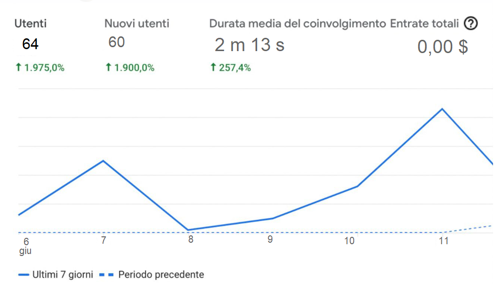

ABSTRACT
Il sito MO.MU è stato creato proprio perché a tutti noi è capitato almeno una volta di guardare un film o una serie tv e innamorarsi perdutamente della colonna sonora tanto da non riuscire più a toglierla dalla testa. Grazie al nostro sito, ritrovare la canzone non è mai stato cosi semplice. Basta fare una ricerca per nome o sfogliare le diverse categorie per poter trovare ciò che stavamo cercando.
Questo sito può essere utilizzato anche nel momento in cui abbiamo semplicemente voglia di ascoltare della buona, anzi buonissima musica
PROJECT MANAGMENT PLAN
BENCHMARKING
Obiettivi
Aiutare le persone a ritrovare la musica che stavano cercando da tempo attraverso il nome di un film o di una serie
Target
Questo sito ha un target molto ampio. Abbiamo categorie di tutti i generi per tutte le età. Dai classici internazionali che magari interessano alle persone più adulte, alle serie tv Netflix che appassionano i giovani, fino ad arrivare ai film Disney, amati dai più piccini
Competitors
Ci sono diversi siti che svolgono più o meno la stessa mansione di MO.MU. SOUNDTRACK.NET e FILMUP.COM tra i più famosi. Entrambi pero non sono incentrati solo sulla musica ma danno altre informazioni sui film o sulle serie in questione. Il nostro vuole mettere la musica al primo posto e focalizzarsi solo ed esclusivamente su quella. Cosi facendo la ricerca risulta più veloce e diretta.
STRUTTURA E LAYOUT
Architettura del sito

WIREFRAME


SCELTE GRAFICHE
Font
La libreria Font utilizzata è di: Google font
- Font-sans-serif
- Font-monospace
Palette cromatica
- #f8f9fa
- #000
- #fff
- #64a19d
LINGUAGGI E STRUMENTI
- Sublime text2: Tool per scrittura codice
- HTML:Struttura sito
- CSS: Grafica sito
- JavaScript
- Bootstrap
- Google Analytics :Statistiche sul sito
- Github: Pubblicazione sito
- Balsamiq Wireframe
- Fontawesome
- Facebook e WhatsApp: Per la promozione del sito
Communication strategy plan
Background
Il punto forte di questo sito è che è adatto a tutti. Questo sito può essere utilizzato da chiunque.
E’ inoltre un sito estremamente basilare e facile da usare quindi non ci sono difficoltà nella comprensione del sito
Obiettivi comunicativi
Per la creazione di questo sito sono stati utilizzati elementi molto semplici, accessibili a tutti.
Il nostro obiettivo è raggiungere circa 20 visualizzazioni del sito nel giro di pochi giorni. Andremo ad analizzare i risultati con Google Analytics
La musica e il cinema sono parte integrante della vita di tutti noi e grazie a questa piattaforma si cerca di creare un ponte tra queste due categorie.
TARGET AUDIENCE E MESSAGGIO
Come abbiamo già accennato, questo sito si rivolge a tutti e a tutte le fasce d’età.
Inoltre ha diverse categorie al suo interno quindi è rivolto anche a persone a cui interessano generi diverse di fil e serie tv.
PROMOZIONE
La promozione è stata effettuata attraverso chat di gruppo su whatsapp e attraverso la pagina Facebook.
Il fatto di aver scelto questo social non è una casualità. Consapevole del fatto che Instagram è il social più del momento, non possiamo negare che Facebook, rimane il social per eccellenza dove possiamo trovare praticamente tutto e tutti. E’ per questo motivo che la promozione è stata fatta con questo mezzo di comunicazione.
VALUTAZIONE DEI RISULTATI
I risultati sono stati analizzati con GOOGLE ANALYTCS.

Come possiamo vedere dal grafico, abbiamo raggiunto 64 utenti nell'arco di pochi giorni. Hanno tutti visualizzato il sito Web e abbiamo superato i 2 minuti di permanenza nel sito.